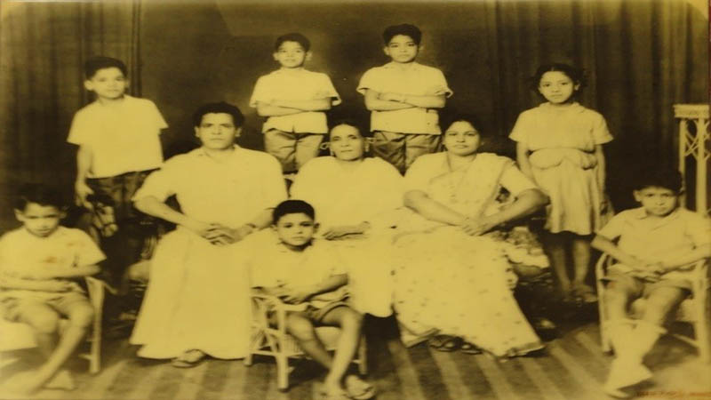
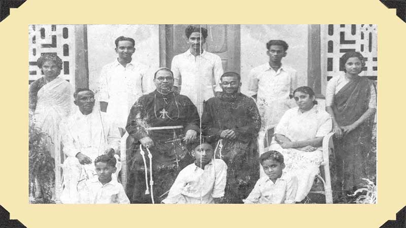
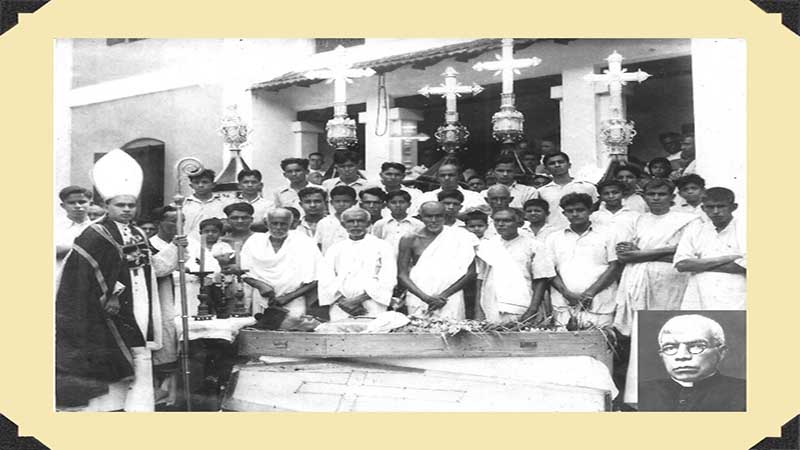
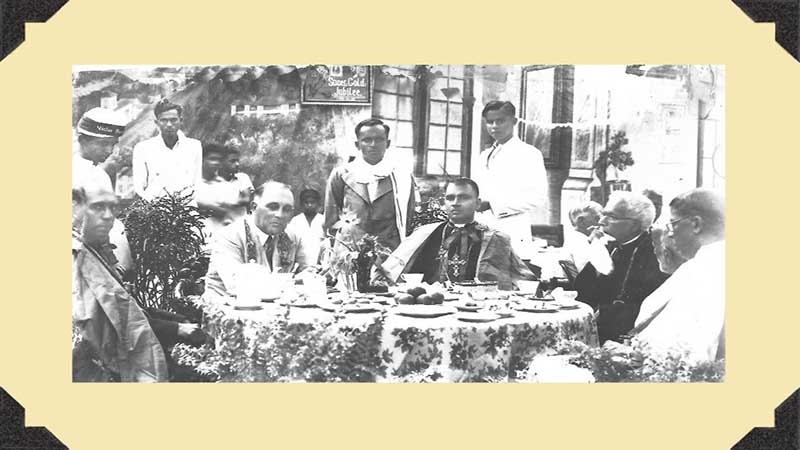
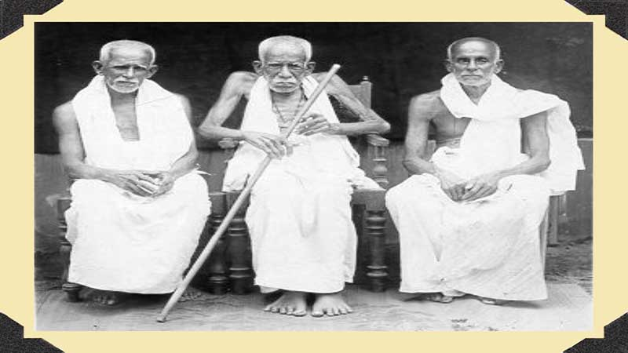

Home
Family History
Executive Members
Family Icons
Gallery
Events
Vintage Flash
Activities
Bathenia Haven
Alapatt Palathingal Charitable Society
Newsfeed
Resources
Download Logo
Family history
Family tree Geni
History Book
Vintage Flash
Home
Activities
Vintage Flash

1) Family Photo of P.T. Manuel in 1960 From 1st row left to right – Dr. P.M.Jose, P.M. Uthuppu, P.M. Thomas, Mrs. Kochannam Alex. 2nd row left to right – P.T. Manuel, Mrs. Kochannam Thomakutty, Mrs. Achai Manuel. 3rd row left to right – P.M. Manuel, P.M. Jojo, P.M. Anto.

2) Sri.A.P.John(C383) & family with Trichur Bishop Dr.George Alapatt(C3322). Photo taken in 1956.
In the chairs :- Sri.A.P.John,Bishop George Alapatt,Fr.Francis Alapatt OFM(C3831) & Smt.Thressia John Standing behind :– Smt.Mary Antony(W/o.DR.A.W.Antony), Er.James Alapatt(C3832),Dr.Francis Alapatt(C3833),Sri.Johny Alapatt(C3834) & Kochuthressia John(Sr.Redempta). Sitting in front :-Dr.Paul Alapatt(C3837),Sri.A.J.Thomas Master(C3835) & Er.George Alapatt(C3836)

3. Funeral of Fr.John Alapatt(C361), S/o.Kunjipailoth, Karanchira,on 8TH May,1944.Also see Fr.John’s photo as inset.
4. Wedding(May 6th,1944) photo of Sri.A.A.Thomas(C3722) & Smt.Regina Thomas

5. Diwan of Kochi Sir G.T.Boag(Sir George Townsend Boag) dining with the then Trichur Bishop, Dr.George Alapatt(C3322) & Fr.John Alapatt(C361) on the occasion of Golden Jubilee celebration of priesthood(1944) of Fr.John Alapatt in Karanchira. You can also see Sri.A.A.Thomas(C3722), Sri.A.P.John(C383) & Sri.Iyppu Alapatt IFS(C394) standing behind.

6. Sons of Lona Chummar(C3) – Sri.Porichunni(C38),Sri.Kunjipailoth(C36) & Sri.Ittiachen(C39).Photo taken at Karanchira in 1934. Look at Kunjipailoth appappan. His age was 107 then!
7. Marriage photo of Mrs. & Mr. P.T. Manuel in 1948.